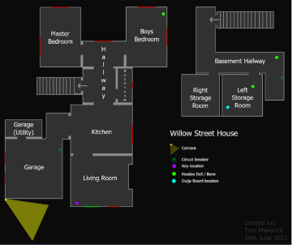
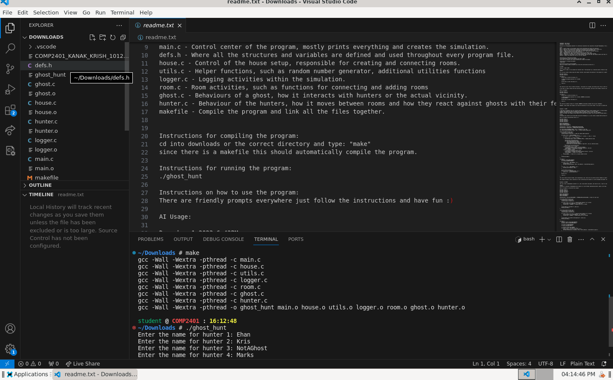
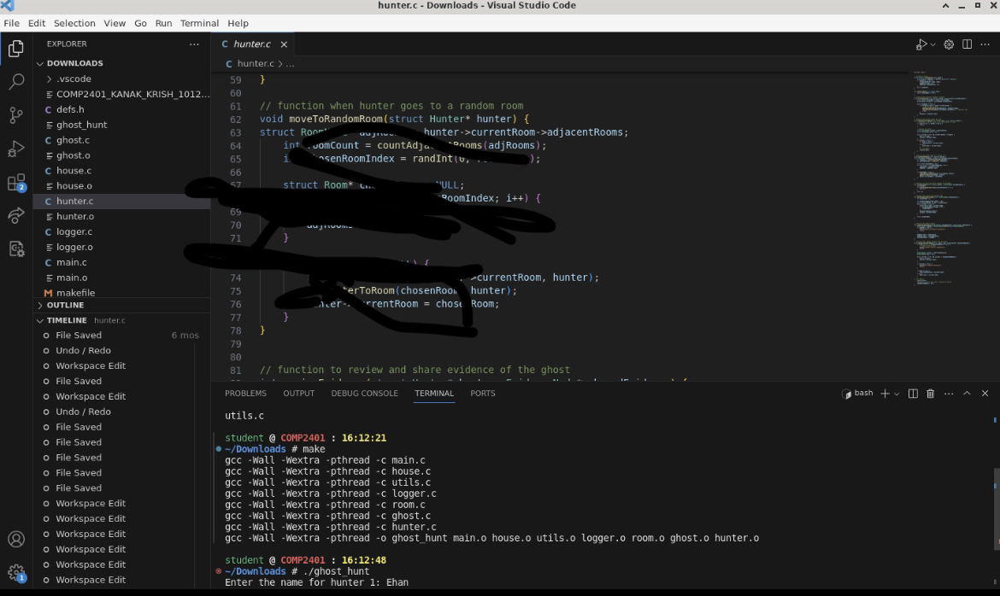

Winter 2023

The Ghost Hunt Simulator was developed using C and C++ in a Linux environment. This project covers major topics from the course, including dynamic and static memory allocation, linked lists, multi-threaded programming, and Makefiles. It simulates a ghost hunt with multiple hunters, each collecting evidence to identify and banish the ghost.

The game features a complex AI system where hunters and ghosts interact in a multi-threaded environment. Each entity runs in its own thread, performing actions such as moving between rooms, collecting evidence, and interacting based on specific state machines. The project required the implementation of advanced data structures and synchronization techniques to ensure smooth operation.

This project enhanced my understanding of linked lists, threading, and synchronization in C and C++. It also provided practical experience with enumerated data types, dynamic memory management, and real-time simulation techniques. The simulator includes logging functionality to track the actions of both hunters and ghosts, aiding in debugging and evaluation of the simulation. The image code has been hidden to protect the privacy of the full code functionality.
Please note that this project was developed with a partner for a school project. It is not intended for release and will not be released.